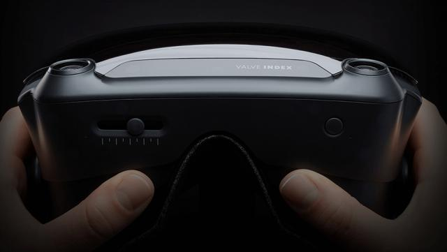

La technologie évolue à des vitesses incroyablement rapides. Si vous avez besoin d'une preuve tangible de l'évolution rapide de la technologie numérique au fil des ans, jetez un coup d'œil à l'industrie du jeu vidéo. Depuis les toutes premières années des jeux 2D en noir et blanc comme Pong (1972) jusqu'au premier jeu 3D, 3D Monster Maze en 1981, et des tireurs primitifs à la première personne comme Wolfenstein 3D (1992) aux tireurs complexes et réalistes. À l'instar de Battlefield 3 (2011), il ne fait aucun doute que l'industrie du jeu vidéo a connu son lot d'évolution technologique.
C’est un tour passionnant pour tous les joueurs, types occasionnels ou hardcore. La plupart d'entre nous ont une liste de souhaits sur l'avenir des jeux. Il est difficile de dire s’ils se réaliseront, mais nous pourrions très bien extrapoler à partir des tendances existantes, c’est là le but de cet article.
1. Une nouvelle technologie de jeu au CES: chargeurs Joy-Con à commutateur portable, casques VR, etc.
Lors de la CES 2019, CNET, le site partenaire de GameSpot, a expérimenté et mis à l'essai plusieurs nouvelles technologies qui pourraient changer la manière dont les gens jouent à l'avenir. Ci-dessous, nous avons mis en avant ceux qui se distinguent le plus, mais vous pouvez également vous rendre sur la plateforme CES de CNET pour tout parcourir.
Certaines personnes se sont présentées au CES avec des éléments de technologie tiers qui vous permettent de jouer à Nintendo Switch de nouvelles façons. Le premier est quelque chose que les gens demandent depuis longtemps à Nintendo: un moyen de recharger Switch Joy-Cons tout en jouant avec eux. Les contrôleurs Xbox One et PS4 peuvent être chargés en cours d'utilisation, de même que les souris et les claviers sans fil sur PC, mais Switch Joy-Cons ne se charge que lorsqu'il est ancré . GameSir a également présenté une combinaison clavier / souris portable pouvant se connecter à Switch, ce qui serait probablement utile pour les jeux de tir comme Fortnite et Splatoon 2, si Nintendo décidait de les mettre à jour avec l'assistance
2. Les cartes GeForce RTX 2080 de Nvidia avec traçage des rayons arrivent sur les ordinateurs portables

Nvidia a dévoilé pour la première fois sa série de cartes graphiques GeForce RTX pour ordinateurs de bureau l’été dernier. Les RTX 2070, RTX 2080 et RTX 2080 Ti ont tous été conçus pour les ordinateurs de jeu haut de gamme . Ils offrent de nouvelles capacités de traçage de rayons, une technique graphique révolutionnaire qui modélise la lumière en temps réel lorsqu'elle intersecte des objets dans une scène virtuelle. des jeux comme Battlefield V.
Semblable à la manière dont la série GTX 1000 a fait son chemin sur les ordinateurs portables, Nvidia apporte ses cartes RTX à plus de 40 ordinateurs portables. Les cartes RTX 2080 à RTX 2060 seront disponibles sur ces ordinateurs portables, et Nvidia affirme qu’ils seront en mesure d’exécuter des jeux à lancer de rayons comme Battlefield V à 60 ips. Le PDG Jensen Huang a déclaré que de telles puces permettraient à un ordinateur portable d’offrir «deux fois les performances d’une PS4 Pro».
Classement Complet par Performances des Cartes Graphiques.
3. 3 tendances émergentes passionnantes
1. Jeu immersif: le retour de la réalité virtuelle (VR)
Certains d'entre vous seront peut-être surpris d'apprendre que les films en 3D existent depuis un siècle environ. La technologie n’a tout simplement pas pris son envol depuis lors en raison des coûts élevés. Ce n’est qu’au cours des dernières années que nous avons assisté à la renaissance de la technologie 3D, non seulement dans des films comme Avatar, mais également pour les écrans de jeu.

Nous avons également vu l'évolution des jeux vidéo en termes de qualité graphique, au point qu'il serait difficile de différencier un jeu vidéo d'une scène de la vie réelle. Il semble qu’il y ait un mouvement vers un divertissement numérique plus immersif, des films aux jeux.
Un retour de réalité virtuelle
With major leaps in technology that resulted in improved hardware capabilities, virtual reality (VR) has started to resurface in the gaming industry. Of particular note is the upcoming Oculus Rift, a VR head-mounted display (HMD) created by Palmer Luckey.

Oculus Rift, qui devrait être disponible début janvier pour la modique somme de 300 USD, offre un système de suivi de la tête à vue panoramique (107 degrés), à réponse rapide (latence ultra faible), ainsi que des capacités de rendu 3D stéréoscopiques immersives. Son prototype, présenté dans diverses conventions de jeu, a déjà reçu de nombreuses critiques positives de la part des développeurs de jeux et des internautes.
2. Écrans secondaires pour les jeux
Avec le marché en plein essor des appareils de poche tels que les smartphones et les tablettes, la guerre entre les trois grandes marques (Sony, Microsoft et Nintendo) s'est intensifiée, avec la hâte d'inventer un appareil de jeu secondaire pour les joueurs..
Wii U
Pensez au nouveau Wii U GamePad, doté d’un écran tactile intégré pouvant servir de complément aux jeux. Dans les jeux de tir à la première personne, un deuxième écran vous permet d’accéder à la carte ou à votre inventaire de manière transparente sans quitter le terrain de jeu. Ce que vous pouvez faire avec un écran secondaire ne se limite pas à cela, il ajoute à l'expérience de jeu qui est merveilleusement démontrée dans cette bande-annonce de jeu de ZombiU pour une vue de l'intérieur (Avertissement: la vidéo contient gore et violence).

SmartGlass
Même Microsoft est en train de rattraper la concurrence avec l'avènement de la Xbox SmartGlass. Cependant, contrairement à la Wii U, SmartGlass est une application qui constitue un outil supplémentaire avec lequel les joueurs peuvent interagir. Il peut être téléchargé sur les smartphones et les tablettes et y être accessible pour améliorer l'expérience de jeu.

3. Jeu Open-Source
Regardez le nombre de jeux maison gratuits (ou bon marché) disponibles sur le marché mobile aujourd'hui et vous aurez une idée de l'avenir des jeux: Open Source! Par exemple, Ouya est une future console de jeux vidéo qui fonctionne selon le concept selon lequel les jeux devraient être peu coûteux à construire et à bas prix.

Les développeurs indépendants n'ont pas besoin d'acheter un kit de développement logiciel (SDK) coûteux pour créer des jeux et les commercialiser. Ouya offre une expérience de jeu en 1080p et contient des tonnes de jeux gratuits et abordables à seulement 99 $, il est difficile de ne pas voir en quoi l’attraction appartient à Ouya.
Game Development
En plus de voir votre environnement physique réel, en réalité augmentée, vous recevrez des informations supplémentaires ou une superposition de données, numériquement, en temps réel. L’application mobile Wikitude est un bon exemple de l’action en cours. En levant votre smartphone et en vous dirigeant vers votre environnement, l'écran vous permet de naviguer à proximité des restaurants, des guichets automatiques, des hôtels, etc.
Dans les jeux, il existe déjà des applications telles que DroidShooting, un simple jeu de tir permettant au joueur d’interagir en temps réel avec son environnement. En tenant votre smartphone levé, vous devrez tirer sur des cibles apparaissant partout autour de vous. C'est un jeu très primitif, bien sûr, mais il y a une fenêtre de possibilités pour un tel concept de gameplay.